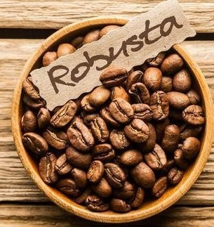
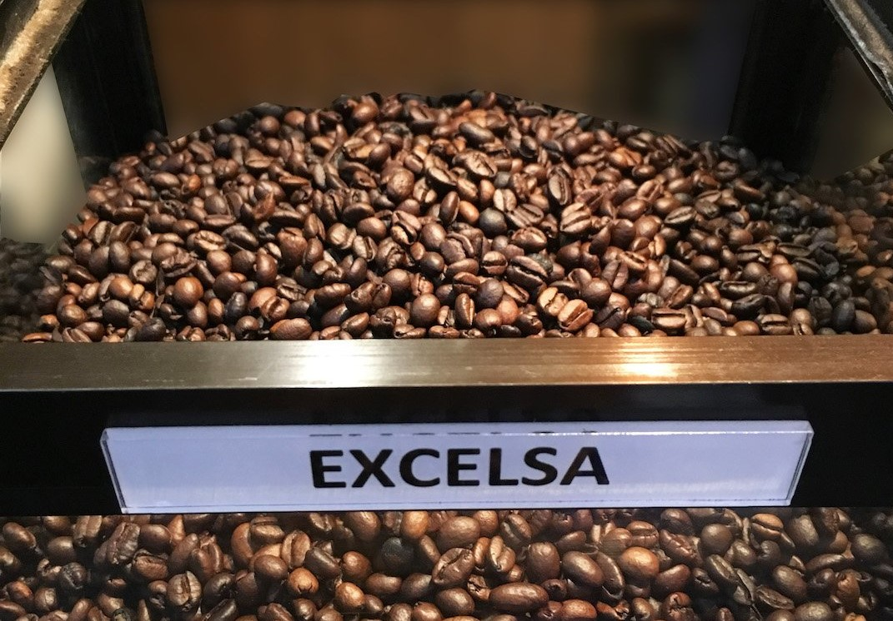

The most delicate and commonly produced coffee bean which accounts for over 60%
of the world's coffee production. Arabica beans have a bright body, possess
a satisfying amount of acidity and tend to have a multi-layered intricacy of flavors
and aromas.
Note that the quality of the Arabica bean diminishes when served cold or with creamer.
It is best served hot, perhaps brewed with the pour-over or drip coffee technique. For best
results when brewing this coffee at home, look for Arabica Coffee that has a full body and
lower acidity.

Robusta Beans
Robusta
The second most produced coffee in the world is the Robusta, it has almost double
the amount of caffeine compared to the Arabica beans - in fact, caffeine is what
makes the beans so robust!
High quality Robusta beans have a smooth texture, low acidity, and often have hints
of chocolate associated with their flavor profile. This is the perfect coffee for cream
and sugar lovers! A good quality Robusta will not lose flavor when adding milk and sugar
(making it a great candidate for iced coffee).
Liberica Beans
Liberica
The Liberica bean is harder to come by in the coffee world these day, but
this variety has an important place in the world's coffee history.
The Liberica beans are larger than the others, often asymmetrical,
and they are the only coffee bean in the world that has such an irregular shape.
The bean are said to have a unique aroma, consisting of floral and fruity notes,
with a full body that possesses a smoky taste.

Excelsa Beans
Excelsa
The Excelsa variety grows on large 20-30 ft trees like the Liberica at similar
altitudesa and has a similar almond-like shape, This beans grow mostly in Southeast
Asia and accounts for a mere 7% of the world's coffee circulation.
The Excelsa beans are largely used in blends in order to give the coffee an extra
boost of flavor and complexity. Excelsa is said to possess a tart and fruity body,
which are flavors reminiscent of a light roast and that somehow also has dark,
roasty notes. This mystery lures coffee drinkers from around the world to try and
seek out the variety.